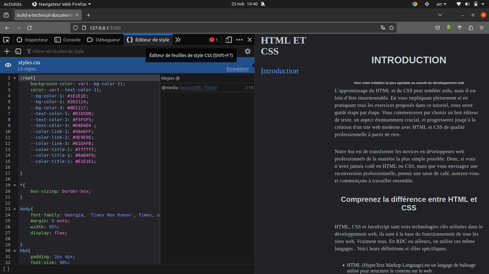

INTRODUCTION
Voici votre initiation la plus agréable au monde du développement web
L’apprentissage du HTML et du CSS peut sembler ardu, mais il est loin d’être insurmontable. En vous impliquant pleinement et en pratiquant tous les exercices proposés dans ce tutoriel, vous serez guidé étape par étape. Vous commencerez par choisir un bon éditeur de texte, un aspect étonnamment crucial, et progresserez jusqu’à la création d'un site web moderne avec HTML et CSS de qualité professionnelle à partir de rien.
Notre but est de transformer les novices en développeurs web professionnels de la manière la plus simple possible. Donc, si vous n’avez jamais codé en HTML ou CSS, mais que vous envisagez une reconversion professionnelle, prenez une tasse de café, asseyez-vous et commençons à travailler ensemble.
Comprenez la différence entre HTML , CSS et JavaScript
HTML, CSS et JavaScript sont trois technologies clés utilisées dans le développement web, ils sont à la base du fonctionnement de tous les sites web, Vraiment tous. En RDC ou ailleurs, on utilise ces même langages . Voici leurs définitions et rôles spécifiques:
- HTML (HyperText Markup Language) est un langage de balisage utilisé pour structurer le
contenu sur le web
.
ex: les textes,les images,les liens, Il définit la structure d’une page web, mais ne possède pas la logique conditionnelle ou les capacités de boucle des langages de programmation. - Ouvrez le site web dans votre navigateur, Dans firefox Par exemple si vous n'en avez pas c'est
le moment du
Télechargement Firefox.

- Faites un clic droit n’importe où sur la page et sélectionnez “Inspecter” ou “Inspecter l’élément” ou Appuyez sur F12. Cela ouvrira les outils de développement de votre navigateur.
- Dans le panneau des outils de développement, recherchez l’onglet “{}Eduteur de style”
- Sous cet onglet, vous devriez voir une liste de tous les fichiers liés à la page web. Recherchez les fichiers qui se terminent par .css. Ce sont les fichiers de style CSS qui sont connectés à la page web.
- A ce stade, vous avez besoin de cliquer sur cette icône en forme d’œil et le fichier CSS sera désactivé pour la page actuelle.
- Ou soit Pour chaque fichier CSS, vous pouvez :
- Cliquer avec le bouton droit de la souris sur le fichier et sélectionner “Supprimer” ou “Désactiver”. Cela déconnectera le fichier CSS de la page web.
- Ou ouvrir le fichier et supprimer tout le contenu, puis appuyer sur “Ctrl + S” pour enregistrer les modifications.
- CSS (Cascading Style Sheets) est un langage de feuille de style utilisé pour décrire l’apparence d’un document écrit en HTML. Il permet de contrôler la mise en page, positionnement des images, choix des couleurs,tailles du texte et autres aspects visuels, mais il ne contient pas non plus de logique de programmation.
- En revanche, JavaScript est un véritable langage de programmation qui peut interagir avec HTML et CSS pour créer des sites web dynamiques et interactifs. Il comprend des structures de contrôle, telles que les boucles et les conditions, ainsi que la possibilité de manipuler des objets et des variables.
Faisons ensemble un petit test. Pour déconnecter le code CSS d’un site web, vous pouvez suivre ces étapes:


Veuillez noter que ces modifications ne sont que temporaires et n’affecteront que votre vue actuelle de la page web. Si vous actualisez la page, tous les fichiers CSS seront à nouveau connectés. Pour déconnecter de manière permanente le CSS, vous devrez avoir accès au code source du site web et supprimer manuellement les liens vers les fichiers CSS
Vous avez exploré par vous-même un site avec du code HTML sans CSS. Vous avez constaté que le site n’est ni beau ni joli. C’est à ce stade que le langage CSS entre en scène. Il a pour rôle de mettre en forme les différents éléments de la page web.